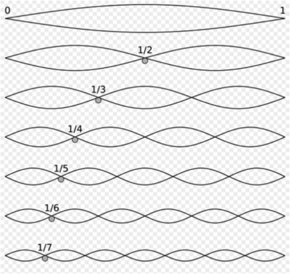

When describing frequency we used a simple waveform––a sine wave––to describe the basic principle of oscillation or vibration. A 'simple waveform' (i.e. sine wave) is made up of a single frequency: a perfect oscillation resulting in a periodically repeating waveform (i.e. its “cycle”). In reality, no acoustic instrument creates a simple waveform when it makes sound (though tuning forks can be quite close). Instead, acoustic instruments create 'complex waveforms': the addition or presence of many simple waveforms. Virtually all acoustic instruments use some kind of force or energy (usually friction) to generate vibrations (i.e. sound) on a physical object (like a string or tube) called a resonator. This force or energy comes with some kind of instability and the resonator it acts upon vibrates at many modes simultaneously, forming a complex reaction to the input force (rather than a mathematically pure and stable reaction like a sine tone). These simultaneous vibrational modes result in what are called 'overtones', 'partials', or 'harmonics' (also referred to as spectra or spectrum).
The 'harmonic/overtone series' is a relationship of whole number integers starting from a fundamental frequency. The 'fundamental frequency' is the lowest partial present in a complex waveform. A 'partial' is any single frequency of a complex waveform. A 'harmonic' is an integer multiple of the fundamental frequency, while an 'overtone' refers to any partial (harmonic or inharmonic) above the fundamental frequency.
If we examine the sonic activation of a violin’s A string (A440) for example, there is more than just one single frequency present, but rather a multitude of frequencies that have rational integer relationships above a fundamental frequency.
https://en.wikipedia.org/wiki/Fundamental_frequency
The string in this case will produce (vibrate) other frequencies in integer relationships above the fundamental frequency. So, the open A-string of a violin will produce the fundamental frequency 440 Hz with overtones at [2 x 440], [3 x 440], [4 x 440], [5 x 440], etc. These overtones each decrease in amplitude (i.e. perceptibility/volume) as they increase in harmonicity (or the number of integer overtones). We hear 440 Hz as the fundamental pitch, because it is the lowest perceivable partial.
| Frequency | Order | Name 1 | Name 2 | Name 3 |
|---|---|---|---|---|
| 1 · f = 440 Hz | n = 1 | fundamental tone | 1st harmonic | 1st partial |
| 2 · f = 880 Hz | n = 2 | 1st overtone | 2nd harmonic | 2nd partial |
| 3 · f = 1320 Hz | n = 3 | 2nd overtone | 3rd harmonic | 3rd partial |
| 4 · f = 1760 Hz | n = 4 | 3rd overtone | 4th harmonic | 4th partial |
https://en.wikipedia.org/wiki/Overtone#Musical_usage_term
The fundamental frequency is typically the pitch we ‘hear’ (as a perceived psychoacoustic phenomenon), regardless of the amplitude and distribution of a tone's overtone structure. This fundamental frequency is generally what we refer to as the ‘pitch’ of a certain ‘note’. All the overtones are perceived as ‘color’ or ‘timbral’ changes to the fundamental frequency. Our brains fuse these partials together so that we hear all these related constituent frequencies as a single tone.
The presence (i.e. amplitude) and distribution of overtones or partials is generally referred to as timbre in music (pronounced “tamber”). Timbre is how we can tell the difference between a violin, trumpet, or voice singing the exact same pitch. If each of those instruments were to produce an A440 (i.e. the same fundamental frequency), we could still tell the difference between each tone because of their harmonic spectra or overtone structure (these terms are relatively interchangeable and synonymous for the most part).
Most acoustic instruments have a rather predictable overtone structure (resonators like strings or air for example). But objects like bells or other percussive instruments have a more complex overtone structure, making it more difficult to hear or perceive its fundamental pitch. Sounds with overtone structures that do not have rational integer relationships are referred to as inharmonic. These types of sounds tend to be more 'noisey'. We don't tend to hear a specific pitch coming from a snare drum or cymbal for example because they have a dense, inharmonic set of partials.
What are the first 4 overtones of a tone with a 200 Hz fundamental?
If the 5th partial of a given tone is 925 Hz what is it's fundamental frequency?
Hint: review the vocab differences between partial, harmonic, and overtone